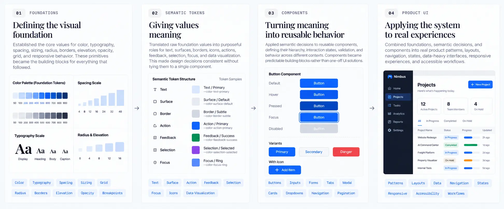

The problems I uncovered
As enterprise SaaS products grow, visual inconsistency rarely comes from one major mistake. It accumulates through hundreds of small decisions.
Seven Core Problems
Individually, these decisions may seem insignificant. At scale, they create a product that becomes increasingly difficult to maintain and evolve
From screens to rules
The most important shift in this project wasn't a design decision — it was a problem framing decision.
Instead of asking:
I reframed the problem as:
That shift — from designing individual screens to designing the rules screens follow — became the foundation of the entire system.
How I Approached the System
The system was approached as a hierarchy of decisions rather than a collection of isolated UI assets—each layer building on the one before it.
Three Layers of Decision
The system is structured across three layers — each layer building on the one below it, so that every product decision traces back to a shared foundation.
From foundations to product
I translated the system from raw design values into semantic meaning, reusable components, and real product experiences. Each layer added context while keeping the underlying decisions consistent and reusable.

The rules behind the Design System
Four principles guided every decision in the system — not rules about what things should look like, but rules about how to make those decisions.
What the system achieved
01 — Faster product delivery
Reduced product delivery time by 25% through reusable foundations, semantic tokens, and shared components.
02 — Shared design language
Established consistent UI patterns across enterprise SaaS experiences and reduced repeated design decisions.
03 — Stronger design–development collaboration
Created a shared system that helped designers and developers work from the same rules and reusable patterns across a 50+ member cross-functional team.
04 — Accessibility built into the system
Applied WCAG 2.1 AA principles across foundational and component-level decisions.